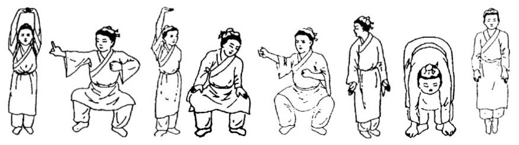

Back to Home
Preservation of Health
Common ways of being healthy:
Baduanjin
八段锦

What is it?
- One of the most common forms of Chinese Qigong used as exercising
- A form of medical Qigong meant to improve health
- Refers to how the eight individual movements of the form characterize & impart a silken quality to the body and its energy.
Go to classes